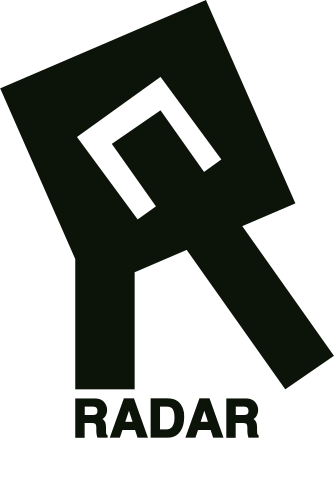
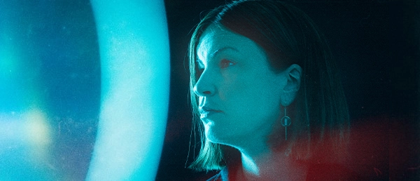

 Næste begivenhed 29/01 Anna Roemer  Andre begivenheder 31/01 Baryl 01/02 Aarhus Drag Extravaganza Vol. 3 05/02 Quade + Yngel 06/02 GORGEOUS SE ALLE TIDER HER
Aarhus’ kreative epicenter står til at miste sin stemme. Din støtte gør en forskel – bliv en del af løsningen! Se, hvad du kan gøre